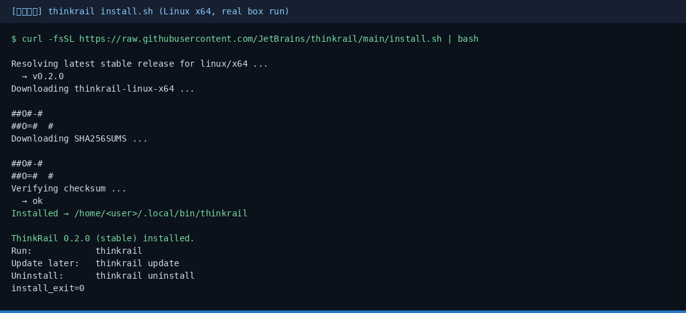
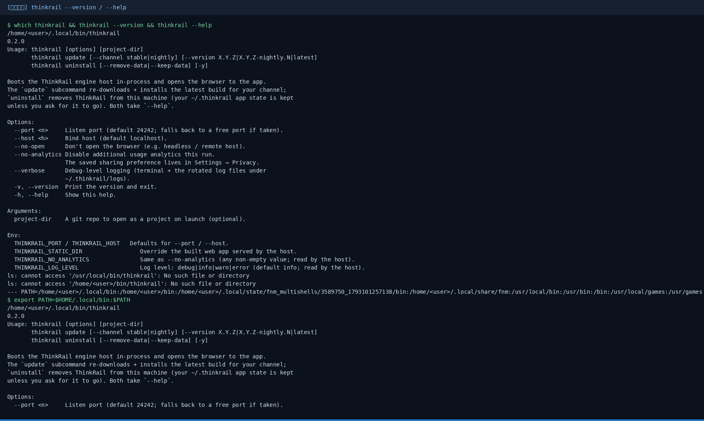
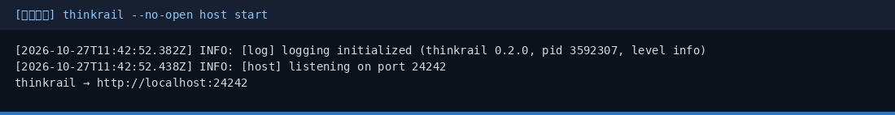
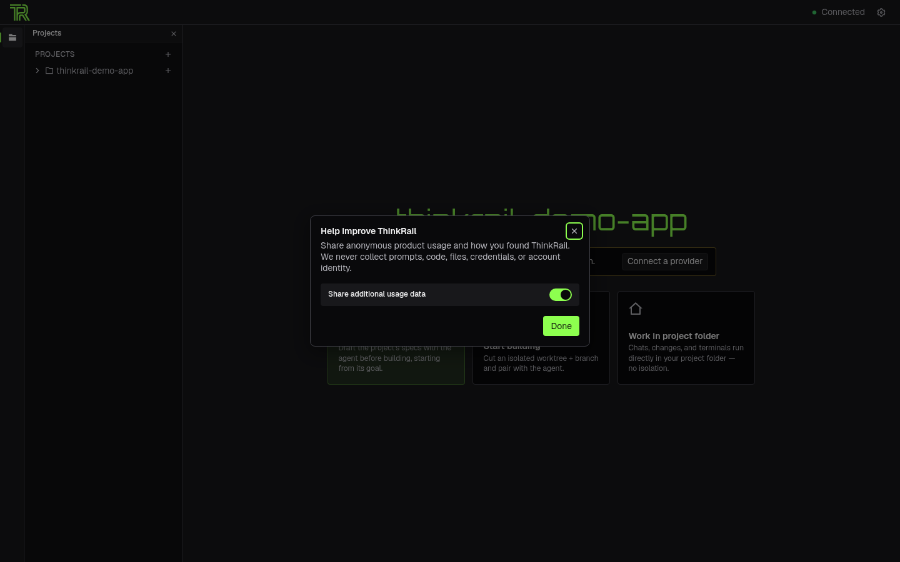
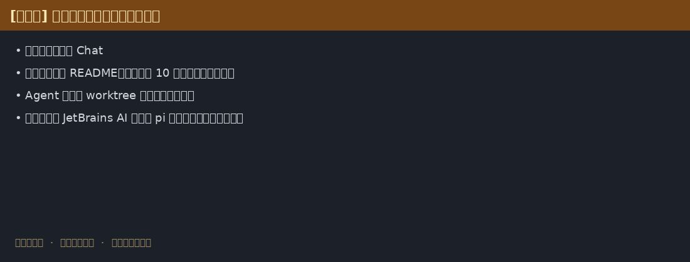

ThinkRail 小白中文教程
社区非官方导读 · 上游 JetBrains/thinkrail · 官网 thinkrail.ai
完整图文教程在 GitHub README（安装命令、演示任务、踩坑、合规说明）：
30 秒安装（CLI）
macOS / Linux：
curl -fsSL https://raw.githubusercontent.com/JetBrains/thinkrail/main/install.sh | bash thinkrail ~/code/my-repo
Windows PowerShell：
powershell -c "irm https://raw.githubusercontent.com/JetBrains/thinkrail/main/install.ps1 | iex"
安装与界面截图





记住三件事
- 需要 git + 可用的模型供应商（JetBrains AI 或 pi 凭据）
- Agent 默认在 worktree 工作区改代码，先审再合
- 本页不提供安装包镜像；请只从官方 Releases 下载并核对 SHA256